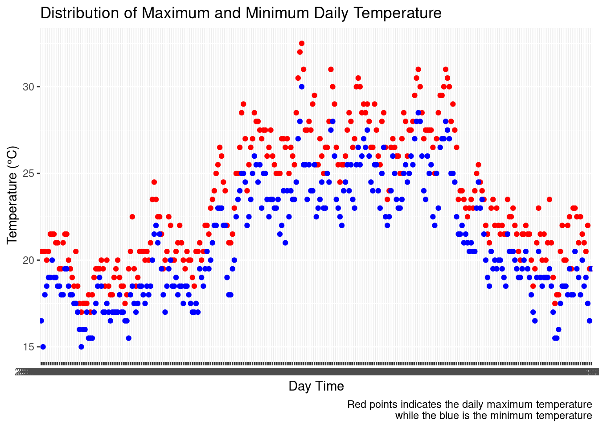

column1 <- c("animal", "ID", "lac12", "lac_wk ", "yearwk", "yearmo", "DIM",
"ch4clean", "dfpcm", "dlw", "lw100 ", "ch4100", "rch4", "stado")
# I specify the column name since the original data does not contain the header.
file_1 <- read.delim("ch4.daily.joint.dat.b", sep = " ", col.names = column1)Assignment: Working with real data
Task Completed using R
Loading the data and naming the Column
I need to import the text file to be read by R. The first and Second data, when i view the data i noticed it is separated by space(” “). I discovered the original data is not having a column name, so i have to give them a name for easy analysis
First Data
Second Data
column2 <- c("animal", "Sire", "Dam")
# I specify the column name since the original data does not contain the header.
file_2 <- read.table("ThePED.txt.b", col.names = column2)Loading useful Library
I am employing tidyverse to prove my work and it is also easy to use because it has inbuilt packages like dplyr and ggplot
library(tidyverse)── Attaching core tidyverse packages ──────────────────────── tidyverse 2.0.0 ──
✔ dplyr 1.1.4 ✔ readr 2.1.5
✔ forcats 1.0.0 ✔ stringr 1.5.1
✔ ggplot2 3.4.4 ✔ tibble 3.2.1
✔ lubridate 1.9.3 ✔ tidyr 1.3.0
✔ purrr 1.0.2
── Conflicts ────────────────────────────────────────── tidyverse_conflicts() ──
✖ dplyr::filter() masks stats::filter()
✖ dplyr::lag() masks stats::lag()
ℹ Use the conflicted package (<http://conflicted.r-lib.org/>) to force all conflicts to become errorsTake a glimpse at the data, to see the shape and Datatypes
glimpse(file_1)Rows: 19,676
Columns: 14
$ animal <chr> "PL005247073046", "PL005280624960", "PL005233865013", "PL0053…
$ ID <chr> "PL005247073046", "PL005280624960", "PL005233865013", "PL0053…
$ lac12 <int> 2, 2, 2, 1, 2, 1, 2, 2, 2, 2, 2, 2, 1, 2, 2, 2, 2, 2, 2, 2, 2…
$ lac_wk. <int> 0, 0, 0, 0, 0, 0, 0, 0, 0, 0, 0, 0, 0, 0, 0, 0, 1, 1, 1, 1, 1…
$ yearwk <chr> "2016--06", "2016--06", "2016--07", "2016--08", "2016--08", "…
$ yearmo <chr> "2016--02", "2016--02", "2016--02", "2016--02", "2016--02", "…
$ DIM <int> 5, 5, 5, 5, 5, 5, 5, 5, 5, 6, 6, 6, 6, 6, 6, 6, 7, 7, 7, 7, 7…
$ ch4clean <dbl> 406.6817, 552.2042, 381.6516, 299.0654, 676.9723, 560.8431, 3…
$ dfpcm <dbl> 41.96572, 34.34850, 39.81712, 29.68402, 48.68148, 35.62248, 4…
$ dlw <int> 764, 552, 705, 710, 727, 648, 685, 602, 618, 693, 683, 720, 7…
$ lw100. <dbl> 7.64, 5.52, 7.05, 7.10, 7.27, 6.48, 6.85, 6.02, 6.18, 6.93, 6…
$ ch4100 <dbl> 4.0668, 5.5220, 3.8165, 2.9907, 6.7697, 5.6084, 3.7318, 4.406…
$ rch4 <dbl> 40.6682, 55.2204, 38.1652, 29.9065, 67.6972, 56.0843, 37.3181…
$ stado <chr> "O", "O", "O", "O", "O", "O", "O", "O", "O", "O", "O", "O", "…# This presented me the number of row and column, and the data types of each variables i am dealing with.I Check for any missing value at the ID/ANIMAL/INDEX i.e the first column if there is missing ID, It has to be handled before analysis
# Checking for na or Zero(0)
a <- file_1 |>
filter((is.na(animal)) | animal == 0) |>
nrow()
b <- file_2 |>
subset((is.na(animal)) | animal == 0) |>
nrow()
#For Confirmation
c <- file_1 |>
filter(!(is.na(animal)) & animal != 0) |>
nrow()
d <- file_2 |>
subset(!(is.na(animal)) & animal != 0) |>
nrow()
# I need to know if any index are missing data, which will not be relevant for the study.
paste("The first data has",a,"missing values of animal, while the second file has",b,"missing values of animal")[1] "The first data has 0 missing values of animal, while the second file has 0 missing values of animal"paste("The first data has",c," records of animal, while the second file has",d,"records of animal")[1] "The first data has 19676 records of animal, while the second file has 5776 records of animal"TASK ONE
From file 1 select records from the 1st lactation, drop the last 5 columns
Using the inbuilt r_package
# I need to know the number of lactation recorder. we have only two, and no missing value... so the sum made up the whole records.
file_1 |>
count(lac12) lac12 n
1 1 11989
2 2 7687# I use subset to filter the first lactation.
NewFile <- subset(file_1, lac12 == 1)
# I slice out the whole column while substracting the last 5. I used the no.of column to avoid error. ncol
NewFile <- NewFile[1:(ncol(NewFile)-5)]
y = names(NewFile)
n = ncol(NewFile)
p <- NewFile |>
filter(lac12 == 2) |>
nrow()
paste("The new data has no second lactation, i.e",p)[1] "The new data has no second lactation, i.e 0"paste("we now have dataframe with",n,"column. And these are:")[1] "we now have dataframe with 9 column. And these are:"print(y)[1] "animal" "ID" "lac12" "lac_wk." "yearwk" "yearmo" "DIM"
[8] "ch4clean" "dfpcm" How many records you got in the new file
dim(NewFile)[1] 11989 9cat("The number of row is", nrow(NewFile),"and the number of columns are", ncol(NewFile),".This was confirmed from the table above")The number of row is 11989 and the number of columns are 9 .This was confirmed from the table aboveHow many animals were in the file 1 and how many is in the new file?
The ID represent each animal. So to avoid error in counting, we need to avoid duplicate. i can use count function or tidyverse to see if there is duplicate
# Using inbuilt r pacakge to view duplicates in File1
mes = file_1 |>
count(animal)
# Using tidyverse to view duplicates in NewFile
pres = NewFile |>
group_by(animal) |>
summarise(n = n())
nmes <- mes |>
filter(n>1) |>
nrow()
npres <- pres |>
filter(n>1) |>
nrow()
paste("The File_1(Original file) has ",nmes,"duplicate. and The Newfile has ",npres,"duplicate.")[1] "The File_1(Original file) has 428 duplicate. and The Newfile has 269 duplicate."Because There are presence of duplicate in Animal ID then we should use a distinct records.
unique_File1Animal <-
file_1 |>
distinct(ID) |>
nrow()
unique_NewFileAnimal <-
NewFile |>
count(ID) |>
nrow()
paste("The number of animal in File_1 are", unique_File1Animal, "while the number of animal in NewFile are", unique_NewFileAnimal)[1] "The number of animal in File_1 are 429 while the number of animal in NewFile are 269"methods/steps you applied to verify the result
Although from the normal view of the data, we might not know that there are more than one records for an animal but we can prove that by sorting the data.
# sort by animal
file_1 |>
arrange(animal) |>
select(1:4) |>
head() animal ID lac12 lac_wk.
1 PL005074104005 PL005074104005 2 32
2 PL005074104005 PL005074104005 2 32
3 PL005074104005 PL005074104005 2 32
4 PL005074104005 PL005074104005 2 33
5 PL005074104005 PL005074104005 2 33
6 PL005074104005 PL005074104005 2 33NewFile |>
arrange(animal) |>
select(1:4) |>
head() animal ID lac12 lac_wk.
1 PL005227672382 PL005227672382 1 9
2 PL005227672382 PL005227672382 1 9
3 PL005227672382 PL005227672382 1 11
4 PL005227672382 PL005227672382 1 11
5 PL005227672382 PL005227672382 1 11
6 PL005227672382 PL005227672382 1 12TASK TWO
Basic distribution parameters of ch4clean
# Let take a brief view on the distribution
Methane_Emission <- file_1$ch4clean
hist(Methane_Emission)
# From this we can make some assumption on the distribution.I should check the integrity of the varaible such as missing values which might affect the result of the parameter e.g mean.
file_1 |>
filter(!(is.numeric(ch4clean)) | (is.na(ch4clean)) | ch4clean == 0) [1] animal ID lac12 lac_wk. yearwk yearmo DIM ch4clean
[9] dfpcm dlw lw100. ch4100 rch4 stado
<0 rows> (or 0-length row.names)Basic distribution parameters
methane <- file_1$ch4clean
avg <- mean(methane)
varia <- var(methane)
std = sd(methane)
Range = max(methane) - min(methane)
quat = quantile(methane)
l = length(methane)
cat("The mean of the distribution is ",avg,", The range of the distribution is ",Range,",the variance is ",varia,"while the Standard deviation is", std)The mean of the distribution is 427.1007 , The range of the distribution is 910.8498 ,the variance is 9850.732 while the Standard deviation is 99.25086# This is the quatile, while the 50% represent the median of the distribution. 0% represent the min and 100% the max
print(quat) 0% 25% 50% 75% 100%
20.57484 363.34040 422.58417 485.88336 931.42460 TASK THREE
Average ch4clean for each DIM
Data <-
file_1 |>
group_by(DIM) |>
summarise(AvgCH4 = mean(ch4clean), Count = n())
# The average methane is in the middle column(AvgCH4)
print(head(Data, 8))# A tibble: 8 × 3
DIM AvgCH4 Count
<int> <dbl> <int>
1 5 459. 9
2 6 456. 7
3 7 474. 10
4 8 459. 6
5 9 482. 11
6 10 443. 9
7 11 407. 9
8 12 476. 11For Confirmation the total number still equate to the nrow of the original data set. it means all the data was captured.
sum(Data$Count)[1] 19676Simple plot showing relationship between DIM and average methane emission.
Data |>
ggplot(aes(x = DIM, y = AvgCH4)) +
geom_point() +
labs(title = "The Methane Emission Across The Days from Calving",
x = "Days in Milk", y = "Average Methane Emission")
TASK FOUR
Combine the file 1 obtained in the step 1/ with the file 2 based on the ID. This is performed using merge or column binding. i bind them by the animal column. which is the same as the ID.
Data2 = merge(NewFile, file_2, by = "animal")
head(Data2) animal ID lac12 lac_wk. yearwk yearmo DIM ch4clean
1 PL005227672382 PL005227672382 1 13 2016--27 2016--07 93 406.5434
2 PL005227672382 PL005227672382 1 11 2016--25 2016--06 81 437.9096
3 PL005227672382 PL005227672382 1 18 2016--31 2016--08 126 346.4402
4 PL005227672382 PL005227672382 1 14 2016--28 2016--07 103 499.2416
5 PL005227672382 PL005227672382 1 18 2016--32 2016--08 127 432.2643
6 PL005227672382 PL005227672382 1 13 2016--27 2016--07 95 432.3297
dfpcm Sire Dam
1 32.50437 FR4460978633 PL005291246311
2 29.52990 FR4460978633 PL005291246311
3 26.77209 FR4460978633 PL005291246311
4 28.45746 FR4460978633 PL005291246311
5 28.51891 FR4460978633 PL005291246311
6 29.80346 FR4460978633 PL005291246311I can view the new two new column with its values
glimpse(Data2)Rows: 11,989
Columns: 11
$ animal <chr> "PL005227672382", "PL005227672382", "PL005227672382", "PL0052…
$ ID <chr> "PL005227672382", "PL005227672382", "PL005227672382", "PL0052…
$ lac12 <int> 1, 1, 1, 1, 1, 1, 1, 1, 1, 1, 1, 1, 1, 1, 1, 1, 1, 1, 1, 1, 1…
$ lac_wk. <int> 13, 11, 18, 14, 18, 13, 20, 21, 17, 14, 17, 16, 12, 22, 17, 2…
$ yearwk <chr> "2016--27", "2016--25", "2016--31", "2016--28", "2016--32", "…
$ yearmo <chr> "2016--07", "2016--06", "2016--08", "2016--07", "2016--08", "…
$ DIM <int> 93, 81, 126, 103, 127, 95, 143, 153, 123, 99, 124, 118, 89, 1…
$ ch4clean <dbl> 406.5434, 437.9096, 346.4402, 499.2416, 432.2643, 432.3297, 3…
$ dfpcm <dbl> 32.50437, 29.52990, 26.77209, 28.45746, 28.51891, 29.80346, 2…
$ Sire <chr> "FR4460978633", "FR4460978633", "FR4460978633", "FR4460978633…
$ Dam <chr> "PL005291246311", "PL005291246311", "PL005291246311", "PL0052…TASK FIVE
How many records is in the new file?
dim(Data2)[1] 11989 11paste("The new file has",nrow(Data2),"datapoints with each having",ncol(Data2),"variables")[1] "The new file has 11989 datapoints with each having 11 variables"Did you find sire and dam for each animal? How many animals has unknown sire? How many animals has unknown dam?
x <- Data2 |>
subset((Sire != 0) & (Dam != 0) ) |>
distinct(animal) |>
nrow()
y <- Data2 |>
filter((Sire == 0) & (Dam == 0) ) |>
count(animal) |>
nrow()
z <- Data2 |>
filter((Sire == 0) & (Dam != 0)) |>
group_by(animal) |>
slice_head() |>
nrow()
w <- Data2 |>
filter((Sire != 0) & (Dam == 0)) |>
group_by(animal) |>
slice_sample() |>
nrow()
paste(x,"Animals have both Sire and Dam recorded,",y,"Animals have Missing Values for both Sire and Dam,",z,"Animal have unknown Sire while ",w,"Animals have unkwown Dam")[1] "265 Animals have both Sire and Dam recorded, 2 Animals have Missing Values for both Sire and Dam, 2 Animal have unknown Sire while 0 Animals have unkwown Dam"#For confirmation The Combine data have 269 distinct ID i.e animals with no Nan. And the sum of the above result is 269
sum(!is.na(Data2$animal))[1] 11989sum(is.na(Data2$animal))[1] 0nrow(count(Data2, ID))[1] 269Last Task
Attached files obtained in the step 1/ and 4/
# File from step 1
write.csv(NewFile, file = "step1.csv")# File from step 1
write.csv(Data2, file = "step4.csv")